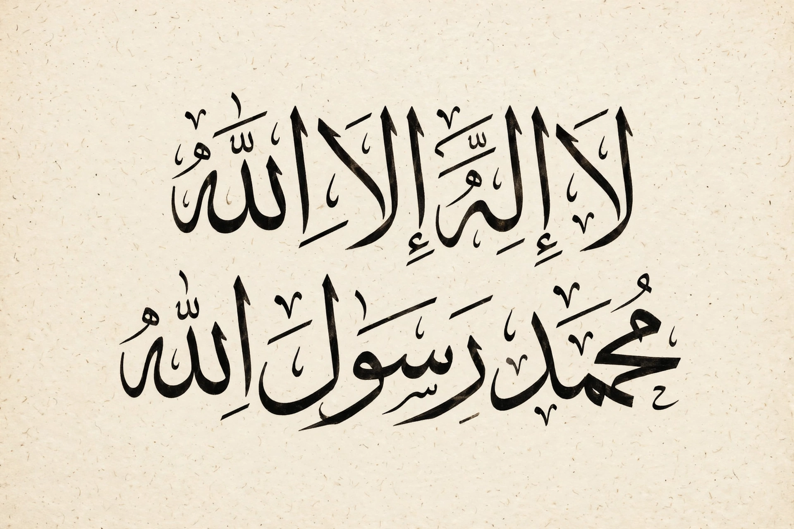

| Shahada | |
|---|---|
| Arabic | ٱلشَّهَادَة |
| Transliteration | aš-šahādah |
| Literal meaning | "the testimony" |
| Type | Declaration of faith |
| Religion | Islam |
| Position | First of the Five Pillars of Islam |

The Shahada (Arabic: ٱلشَّهَادَة, aš-šahādah, "the testimony"), also transliterated as Shahadah, is an Islamic oath and creed, and the first of the Five Pillars of Islam. It declares belief in the oneness of God (tawhid) and the acceptance of Muhammad as God's messenger.
لَا إِلَٰهَ إِلَّا ٱللَّٰهُ مُحَمَّدٌ رَسُولُ ٱللَّٰهِ
Lā ʾilāha ʾillā Allāh, Muḥammadun rasūlu Allāh.
"There is no god but God. Muhammad is the messenger of God."
Reciting the Shahada with conviction is considered sufficient for a person to formally enter the Islamic faith. It is whispered into the ears of newborns, recited in the daily prayers (Salah), and forms part of the call to prayer (adhan). The declaration affirms strict monotheism and the finality of Muhammad's prophethood in mainstream Islamic theology.
The Shahada consists of two clauses, sometimes called the two testimonies (al-shahādatān): the first negates the existence of any deity worthy of worship other than God, and the second affirms that Muhammad is His servant and messenger. Shia Islam adds a third phrase in some contexts, affirming Ali as the wali (guardian) of God, though this is not part of the Shahada for most Muslims.
The Shahada appears on the national flags of several states, including Saudi Arabia, Afghanistan, and Somaliland, as well as on the flags of various movements. On the Saudi flag the text is written in white Thuluth script on a green field above a horizontal sword.